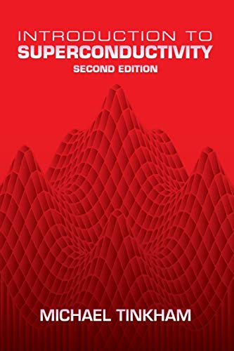
Introduction to Superconductivity
One of my favorite references for superconductivity. It is particularly useful for experimental physicists because physical arguments remain central without becoming lost in excessive formalism.
Physics • Literature • Ideas • Curiosity
Reading is one of the interests that has stayed with me across very different parts of my life. My bookshelf moves easily between physics, literature, philosophy, science writing, biographies, and books that simply made me see something differently.
Physics Books
Some books become more than course references. They are the books you return to years later when you need to understand a concept again from first principles.

One of my favorite references for superconductivity. It is particularly useful for experimental physicists because physical arguments remain central without becoming lost in excessive formalism.
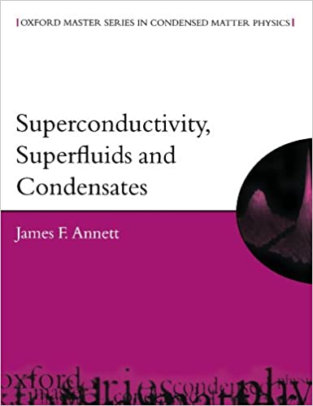
A very approachable introduction to superconductivity and condensate physics. The explanations are clear and the problems make it especially useful for students entering the subject.
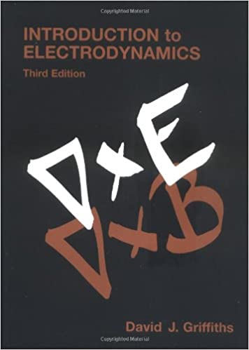
Probably one of the most familiar electromagnetism texts for physics students. I particularly like how carefully the ideas are organized and developed through examples.
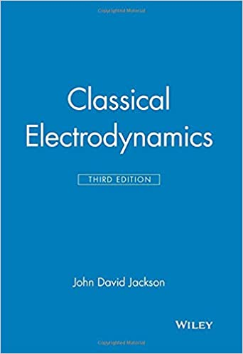
A much more demanding electrodynamics reference. When Griffiths gives the intuition and foundation, Jackson is where considerably more mathematical detail begins.
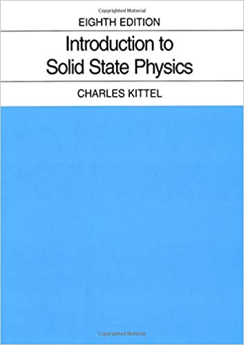
A classic starting point for solid-state and condensed-matter physics. It introduces an enormous range of concepts in a compact form.
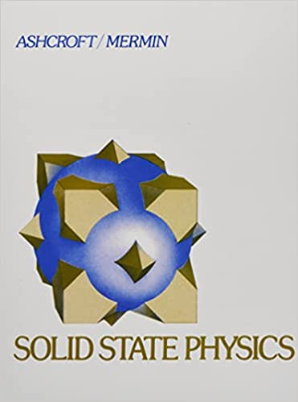
A deeper solid-state reference and one of the books I associate much more strongly with graduate-level condensed matter physics.
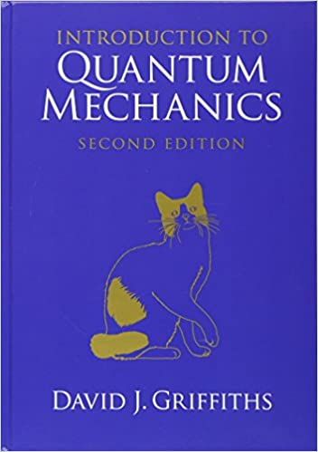
A very good first serious quantum-mechanics text and one of the standard books for undergraduate physics.
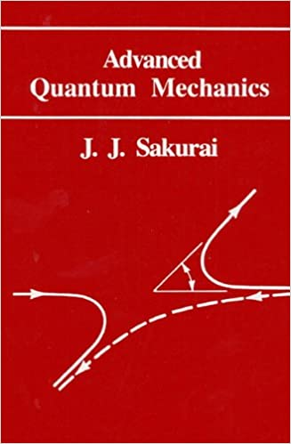
A natural next step when moving from introductory quantum mechanics toward more advanced formulations and topics.
Physics Beyond Textbooks
Richard Feynman was one of the first physicists whose writing made me realize how differently the same physical idea can be explained. I first read the Feynman Lectures as an undergraduate, and the way he approached familiar concepts changed how I thought about physics.
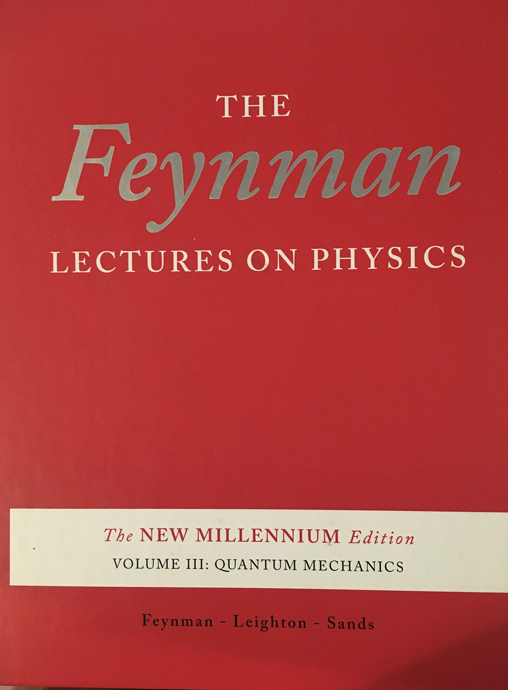
Richard Feynman
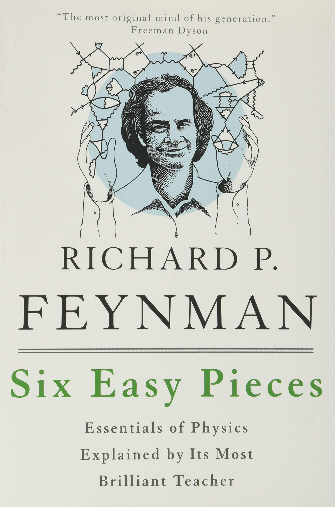
Richard Feynman
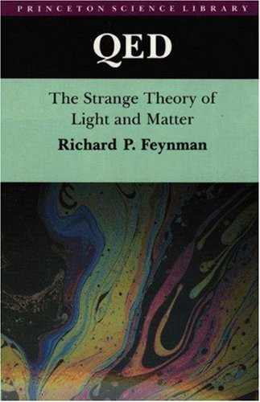
Richard Feynman
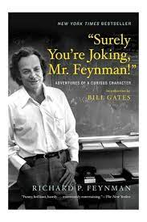
Richard Feynman
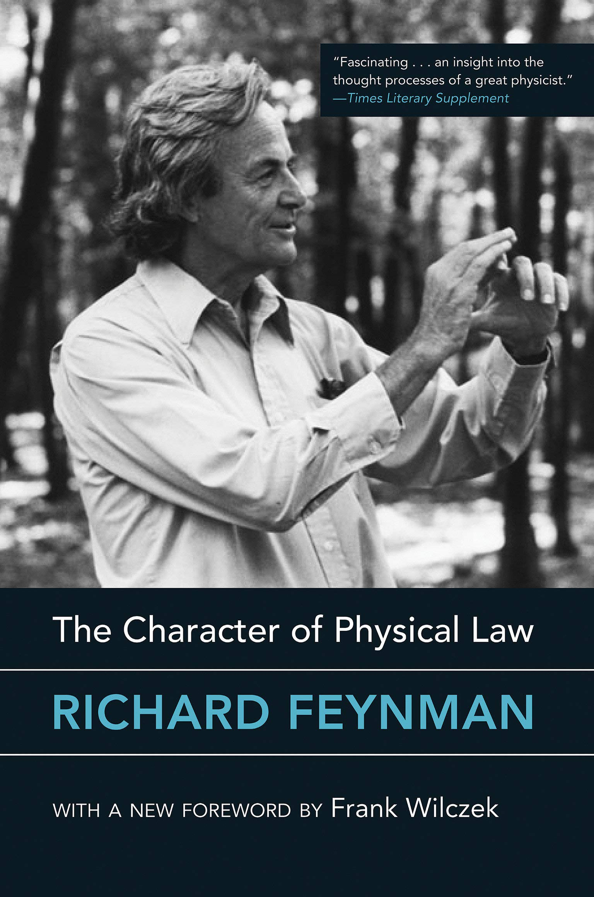
Richard Feynman
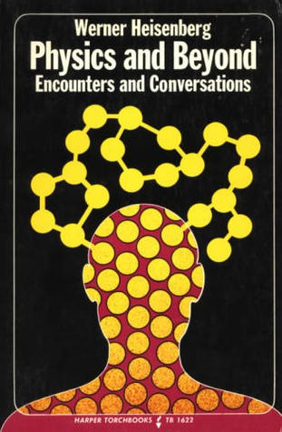
Werner Heisenberg
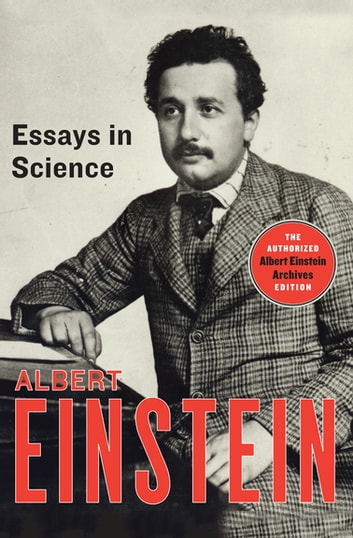
Albert Einstein
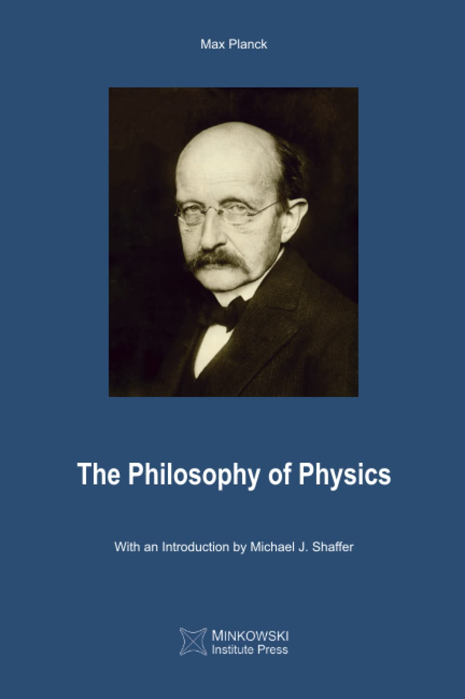
Max Planck
Literature
Literature is probably the largest part of my reading outside science. I especially enjoy French, Russian, American, British, and European literature, and I like books that leave me thinking about their characters long after I finish them.
One of the novels I value most. Prince Myshkin's innocence is placed against a world driven by status, money, jealousy, and self-interest. For me, much of the novel is a conflict between darkness and light — and whether goodness alone can survive the world around it.

I think this novel deserves its reputation. I especially enjoyed seeing its world through Scout's perspective and the combination of humor, childhood, injustice, and moral seriousness.
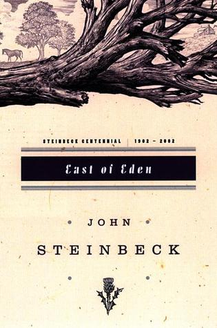
My first Steinbeck and certainly not my last. What stayed with me most was its exploration of good, evil, choice, and the idea of “timshel” — that a person may choose.
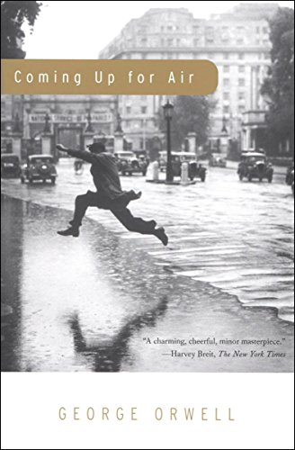
A book about nostalgia and the uncomfortable discovery that the places preserved in memory do not wait unchanged for us.
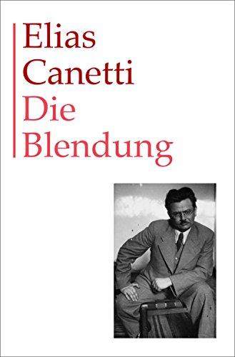
One of the strangest and most memorable novels I have read. Peter Kien's obsession with his enormous library gradually turns into something claustrophobic, tragic, and almost surreal.
I enjoyed the contrast between the intellectual narrator and Zorba's instinctive way of living in the present. Much of the novel feels like a conversation between thinking about life and actually living it.
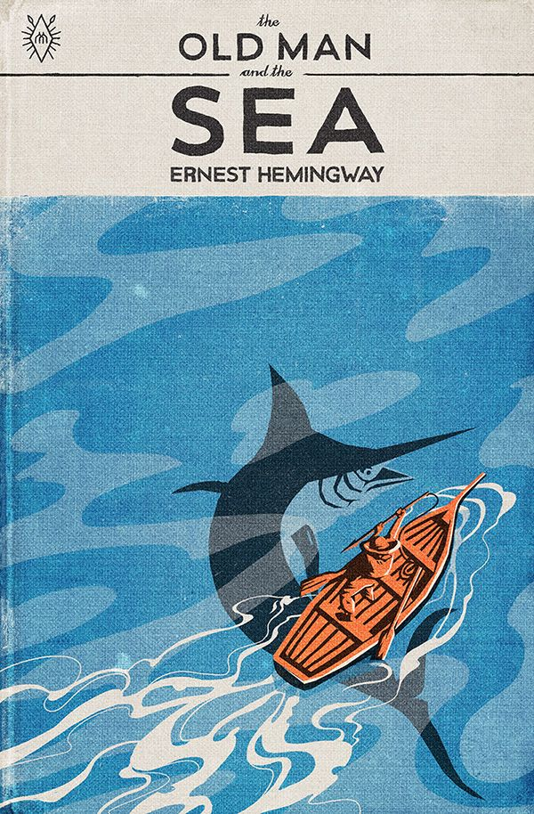
One of my favorites. The plot is almost impossibly simple, yet Hemingway turns the fisherman's struggle into something epic.
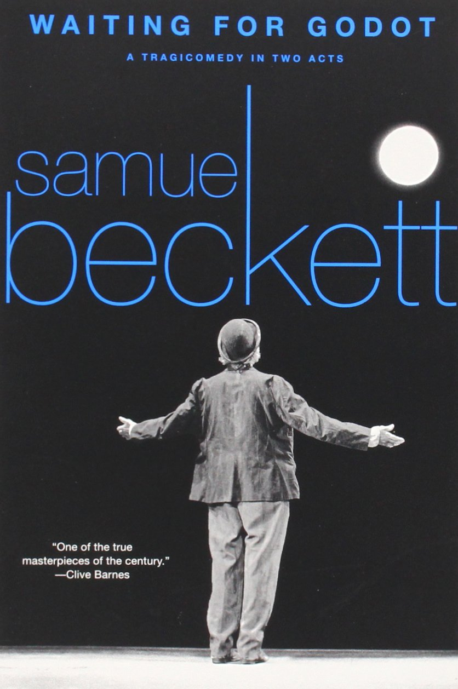
Vladimir and Estragon wait for someone who never arrives. Almost nothing happens, and somehow that is exactly what makes the play so powerful.
Habits & Psychology
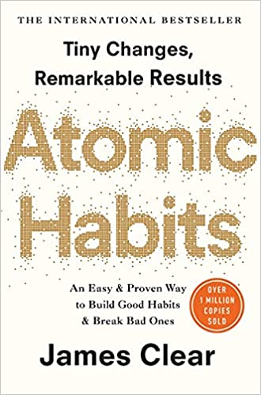
The ideas are not necessarily completely new, but I found the book practical because it translates familiar ideas about habits into concrete systems that can actually be applied.
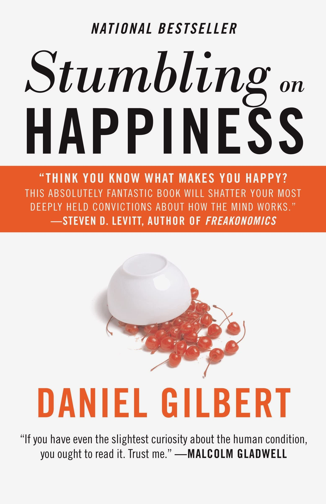
Less a guide to becoming happy than an exploration of why humans are surprisingly poor at predicting how future events will make them feel.
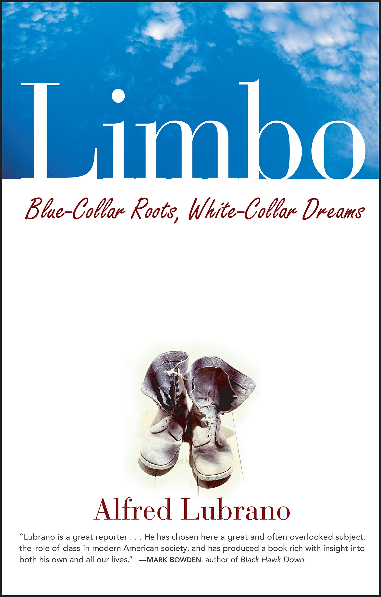
A particularly interesting discussion of education, class, and what happens when someone's social world changes through education.
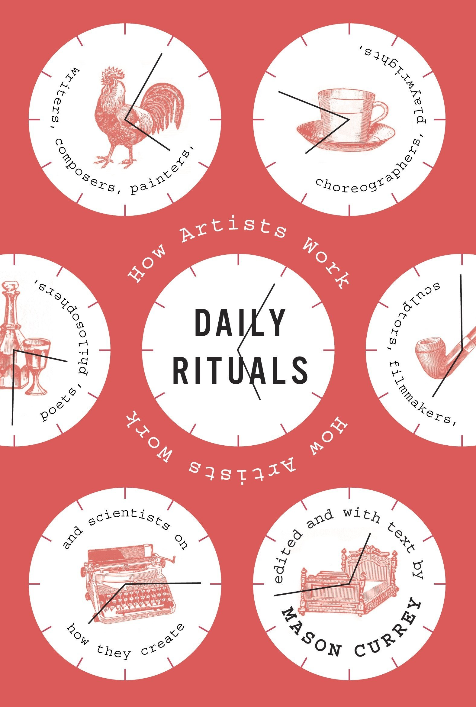
What interested me most was how differently creative people organize their lives. There is clearly no single ideal recipe for productive or creative work.
Graphic Novels
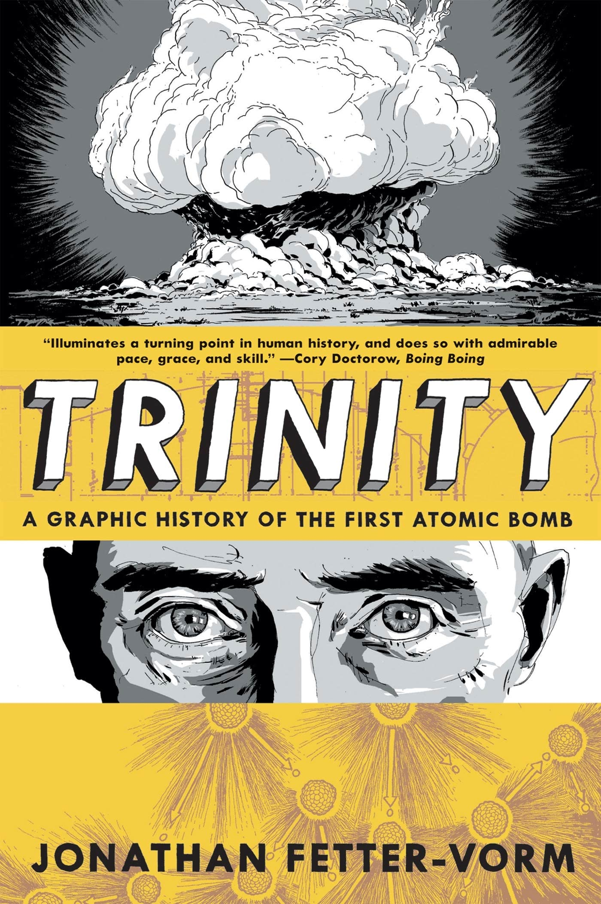
A concise and surprisingly effective visual history of the Manhattan Project that combines political history with an accessible explanation of the underlying physics.
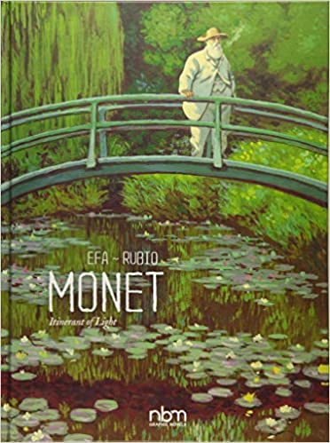
I particularly enjoyed seeing Monet's long period of struggle before recognition and the final section explaining individual paintings and their context.
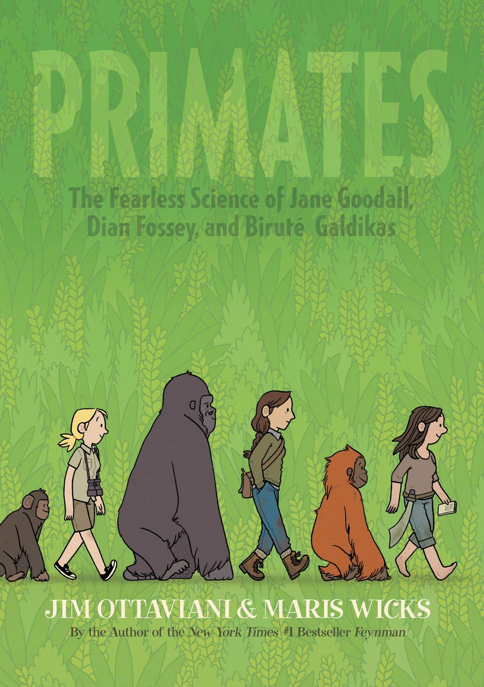
The stories of Jane Goodall, Dian Fossey, and Biruté Galdikas. I enjoyed the focus on these remarkable scientists and their fieldwork, although I wished the book went deeper into their research.
A Growing Shelf
This is not intended to be a complete record of everything I have read. It is simply a place to keep some of the books, ideas, and authors that have stayed with me. I will keep adding to it over time.